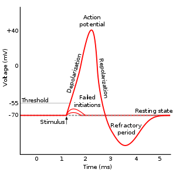
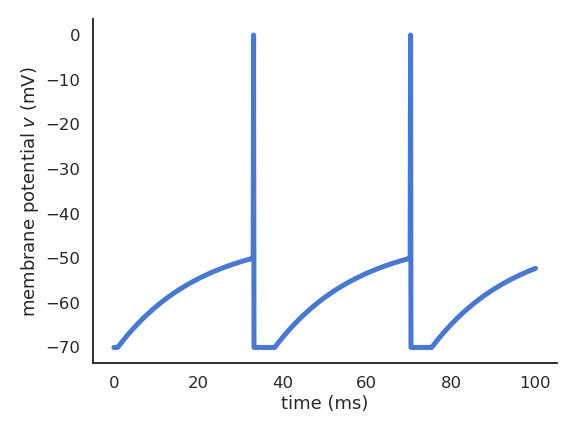
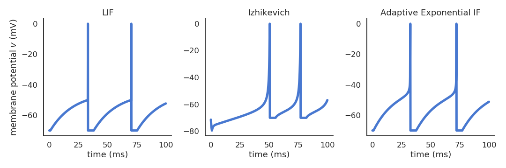
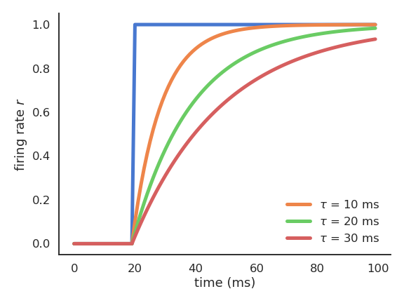
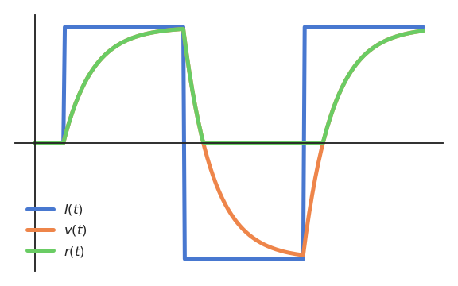

Neurons
Biological neurons
The human brain is composed of 100 billion neurons. A biological neuron is a cell, composed of a cell body (soma), multiple dendrites and an axon. The axon of a neuron can contact the dendrites of another through synapses to transmit information. There are hundreds of different types of neurons, each with different properties.

Neurons are negatively charged: they have a resting potential at around -70 mV. When a neuron receives enough input currents, its membrane potential can exceed a threshold and the neuron emits an action potential (or spike) along its axon.

A spike has a very small duration (1 or 2 ms) and its amplitude is rather constant. It is followed by a refractory period where the neuron is hyperpolarized, limiting the number of spikes per second to 200.

The action potential arrives at the synapses and releases neurotransmitters in the synaptic cleft: glutamate (AMPA, NMDA), GABA, dopamine, serotonin, nicotin, etc… Neurotransmitters can enter the receiving neuron through receptors and change its potential: the neuron may emit a spike too. Synaptic currents change the membrane potential of the post.synaptic neuron. The change depends on the strength of the synapse called the synaptic efficiency or weight. Some synapses are stronger than others, and have a larger influence on the post-synaptic cell.

The two important dimensions of the information exchanged by neurons are:
The instantaneous frequency or firing rate: number of spikes per second (Hz).
The precise timing of the spike trains.

The shape of the spike (amplitude, duration) does not matter much for synaptic transission: spikes can be considered as binary signals (0 or 1) occuring at precise moments of time.
Some neuron models called rate-coded models only represent the firing rate of a neuron and ignore spike timing at all. Other models called spiking models represent explicitly the spiking behavior.
Hodgkin-Huxley neurons
Alan Hodgkin and Andrew Huxley (Nobel prize 1963) were the first to propose a detailed mathematical model of the giant squid neuron. The membrane potential V of the neuron is governed by an electrical circuit, including sodium and potassium channels. The membrane has a capacitance C that models the dynamics of the membrane (time constant). The conductance g_L allows the membrane potential to relax back to its resting potential E_L in the absence of external currents. External currents (synaptic inputs) perturb the membrane potential and can bring the neuron to fire an action potential.
Their neuron model include:
An ordinary differential equation (ODE) for the membrane potential v.
Three ODEs for n, m and h representing potassium channel activation, sodium channel activation, and sodium channel inactivation.
Several parameters determined experimentally.
\begin{aligned} a_n &= 0.01 \, (v + 60) / (1.0 - \exp(-0.1\, (v + 60) ) ) \\ a_m &= 0.1 \, (v + 45) / (1.0 - \exp (- 0.1 \, ( v + 45 ))) \\ a_h &= 0.07 \, \exp(- 0.05 \, ( v + 70 )) \\ b_n &= 0.125 \, \exp (- 0.0125 \, (v + 70)) \\ b_m &= 4 \, \exp (- (v + 70) / 80) \\ b_h &= 1/(1 + \exp (- 0.1 \, ( v + 40 )) ) \\ & \\ \frac{dn}{dt} &= a_n \, (1 - n) - b_n \, n \\ \frac{dm}{dt} &= a_m \, (1 - m) - b_m \, m \\ \frac{dh}{dt} &= a_h \, (1 - h) - b_h \, h \\ \end{aligned}
\begin{aligned} C \, \frac{dv}{dt} = g_L \, (V_L - v) &+ g_K \, n^4 \, (V_K - v) \\ & + g_\text{Na} \, m^3 \, h \, (V_\text{Na} - v) + I \\ \end{aligned}
These equations allow to describe very precisely how an action potential is created from external currents.

Spiking neurons
As action potentials are stereotypical, it is a waste of computational resources to model their generation precisely. What actually matters are the sub-threshold dynamics, i.e. what happens before the spike is emitted.
The leaky integrate-and-fire (LIF; Lapicque, 1907) neuron integrates its input current and emits a spike if the membrane potential exceeds a threshold.
C \, \frac{dv}{dt} = - g_L \, (v - V_L) + I
\text{if} \; v > V_T \; \text{emit a spike and reset.}

Other well-known spiking neuron models include:
- Izhikevich quadratic IF (Izhikevich, 2003), using a quadratic function of the membrane potential and an adaptation variable u.
\frac{dv}{dt} = 0.04 \, v^2 + 5 \, v + 140 - u + I \frac{du}{dt} = a \, (b \, v - u)
- Adaptive exponential IF (AdEx, (Brette and Gerstner, 2005)), using an exponential function.
\begin{aligned} C \, \frac{dv}{dt} = -g_L \ (v - E_L) + & g_L \, \Delta_T \, \exp(\frac{v - v_T}{\Delta_T}) \\ & + I - w \end{aligned} \tau_w \, \frac{dw}{dt} = a \, (v - E_L) - w

Contrary to the simple LIF model, these realistic neuron models can reproduce a variety of dynamics, as biological neurons do not all respond the same to an input current. Some fire regularly, some slow down with time, while others emit bursts of spikes. Modern spiking neuron models allow to recreate these variety of dynamics by changing a few parameters.

Rate-coded neurons
At the population level, interconnected networks of spiking neurons tend to fire synchronously (code redundancy). What if the important information was not the precise spike timings, but the firing rate of a small population? The instantaneous firing rate is defined in Hz (number of spikes per second). It can be estimated by an histogram of the spikes emitted by a network of similar neurons, or by repeating the same experiment multiple times for a single neuron. One can also build neural models that directly model the firing rate of (a population of) neuron(s): the rate-coded neuron.

A rate-coded neuron is represented by two time-dependent variables:
- The “membrane potential” v(t) which evolves over time using an ODE.
\tau \, \frac{d v(t)}{dt} + v(t) = \sum_{i=1}^d w_{i, j} \, r_i(t) + b
- The firing rate r(t) which transforms the membrane potential into a single continuous value using a transfer function or activation function.
r(t) = f(v(t))

The membrane potential uses a weighted sum of inputs (the firing rates r_i(t) of other neurons) by multiplying each rate with a weight w_i and adds a constant value b (the bias). The activation function can be any non-linear function, usually making sure that the firing rate is positive.

Remarks on ODEs
Let’s consider a simple rate-coded neuron taking a step signal I(t) as input:
\tau \, \frac{d v(t)}{dt} + v(t) = I(t)
r(t) = (v(t))^+
The “speed” of v(t) is given by its temporal derivative:
\frac{d v(t)}{dt} = \frac{I(t) - v(t)}{\tau}
When v(t) is quite different from I(t), the membrane potential “accelerates” to reduce the difference. When v(t) is similar to I(t), the membrane potential stays constant.

The membrane potential follows an exponential function which tries to “match” its input with a speed determined by the time constant \tau. The time constant \tau determines how fast the rate-coded neuron matches its inputs. Biological neurons have time constants between 5 and 30 ms depending on the cell type.
There exists a significant number of transfer functions that can be used:

When using the rectifier activation function (ReLU):
f(x) = \max(0, x)
the membrane potential v(t) can take any value, but the firing rate r(t) is only positive.

When using the logistic (or sigmoid) activation function:
f(x) = \frac{1}{1 + \exp(-x)}
the firing rate r(t) is bounded between 0 and 1, but responds for negative membrane potentials.

Artificial neurons
By omitting the dynamics of the rate-coded neuron, one obtains the very simple artificial neuron (McCulloch and Pitts, 1943):

An artificial neuron sums its inputs x_1, \ldots, x_d by multiplying them with weights w_1, \ldots, w_d, adds a bias b and transforms the result into an output y using an activation function f.
y = f( \sum_{i=1}^d w_i \, x_i + b)
The output y directly reflects the input, without temporal integration. The weighted sum of inputs + bias \sum_{i=1}^d w_i \, x_i + b is called the net activation.
This overly simplified neuron model is the basic unit of the artificial neural networks (ANN) used in machine learning / deep learning.
Artificial neurons and hyperplanes
Let’s consider an artificial neuron with only two inputs x_1 and x_2.
The net activation w_1 \, x_1 + w_2 \, x_2 + b is the equation of a line in the space (x_1, x_2).
w_1 \, x_1 + w_2 \, x_2 + b = 0 \Leftrightarrow x_2 = - \frac{w_1}{w_2} \, x_1 - \frac{b}{w_2}

The net activation is a line in 2D, a plane in 3D, etc. Generally, the net activation describes an hyperplane in the input space with d dimensions (x_1, x_2, \ldots, x_d). An hyperplane has one dimension less than the space.

{kind=link}
We can write the net activation using a weight vector \mathbf{w} and a bias b:
\sum_{i=1}^d w_i \, x_i + b = \langle\mathbf{w} \cdot \mathbf{x} \rangle + b
with:
\mathbf{w} = \begin{bmatrix} w_1 \\ w_2 \\ \ldots \\ w_d \end{bmatrix} \qquad \mathbf{x} = \begin{bmatrix} x_1 \\ x_2 \\ \ldots \\ x_d \end{bmatrix}
\langle \cdot \rangle is the dot product (aka inner product, scalar product) between the input vector \mathbf{x} and the weight vector \mathbf{w}.
The weight vector is orthogonal to the hyperplane (\mathbf{w}, b) and defines its orientation. b is the “signed distance” between the hyperplane and the origin. The hyperplane separates the input space into two parts:
\langle\mathbf{w} \cdot \mathbf{x} \rangle + b > 0 for all points \mathbf{x} above the hyperplane.
\langle\mathbf{w} \cdot \mathbf{x} \rangle + b < 0 for all points \mathbf{x} below the hyperplane.
By looking at the sign of the net activation, we can separate the input space into two classes. This will be the main principle of linear classification.